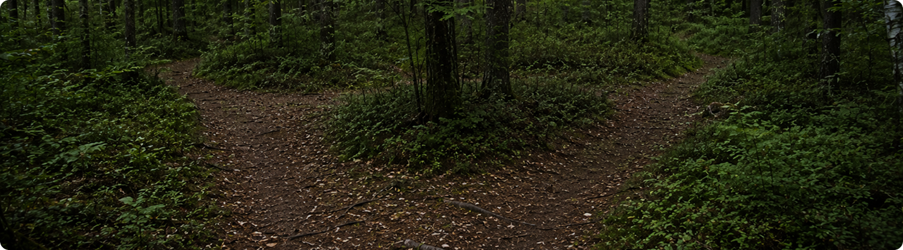
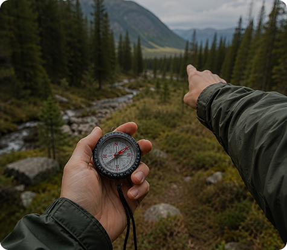
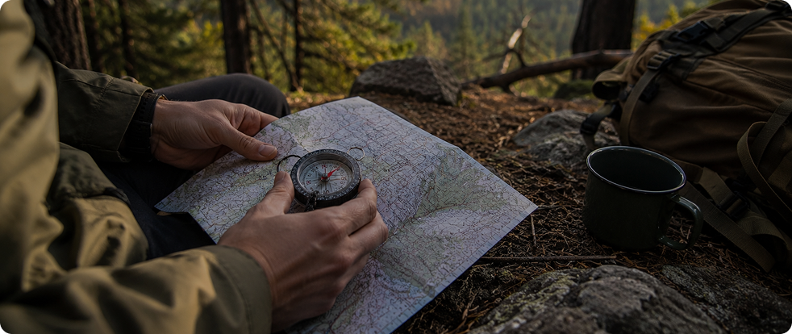
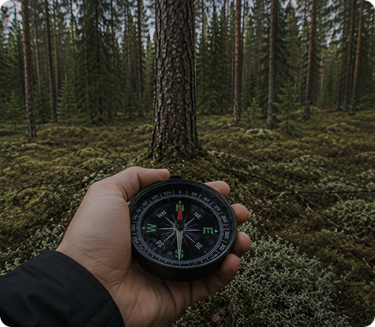
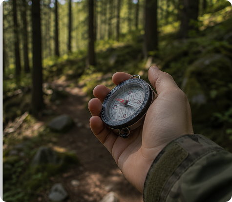
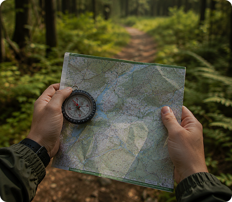

Современные карты и смартфоны значительно упрощают ориентирование, однако техника может разрядиться, потерять сигнал или выйти из строя. В таких ситуациях обычный компас остаётся одним из самых надёжных инструментов навигации.
Для уверенного использования компаса не требуется специальная подготовка. Достаточно понимать несколько базовых принципов и регулярно применять их во время прогулок.
В отличие от телефона компас не зависит от заряда батареи, мобильной сети или спутникового сигнала. Даже при отсутствии связи он позволяет сохранять направление движения и контролировать маршрут.
Почему компас всё ещё полезен
Даже на популярных маршрутах бывают участки без связи и заметных ориентиров. В густом лесу направление движения может постепенно меняться незаметно для самого человека.
Компас помогает сохранять выбранный курс, контролировать направление движения и принимать решения на развилках или открытых участках местности.
В отличие от телефона, компас не зависит от заряда батареи, мобильной сети или спутникового сигнала.

БОЛЬШЕ В ДЗЕНЕ
Что показывает компас
Перед использованием важно понимать основные элементы прибора.
Север
Красная стрелка всегда указывает направление на магнитный север
Корпус
Помогает задавать и удерживать выбранное направление движения
Шкала градусов
Позволяет определять и сохранять точное направление
Большинство туристических компасов работают одинаково. Освоив один прибор, ты без труда сможешь пользоваться и другими моделями.
Основные направления света
Навигация начинается с понимания сторон света.
Север
Главная точка отсчёта для определения направления движения
Юг
Находится напротив севера и помогает ориентироваться на местности
Восток
Восток находится справа от севера и обозначается буквой E
Запад
Запад находится слева от севера и обозначается буквой W
Перед началом движения всегда убедись, что рядом нет крупных металлических предметов, автомобилей, линий электропередач или электроники, которые могут влиять на показания компаса


Как определить направление движения
После того как стороны света понятны, можно использовать компас для выбора маршрута.
Поставь компас горизонтально
Стрелка должна свободно вращаться
Дождись остановки стрелки
Не двигай прибор во время измерения
Определи север
Совмести красную стрелку с обозначением N
Выбери направление
Определи сторону света, в которую необходимо двигаться
Найди ориентир впереди
Выбери дерево, камень или другой заметный объект
Двигайся к ориентиру
После достижения выбери следующий объект по тому же направлению
Такой способ помогает сохранять курс даже в густом лесу, где невозможно видеть дальние ориентиры.
Как двигаться по азимуту
Азимут — это угол между севером и выбранным направлением движения.
На практике именно азимут позволяет сохранять точный курс на протяжении длительного маршрута.
0°
Соответствует северу и используется как основная точка отсчёта
90°
Указывает направление на восток при движении по азимуту
180°
Соответствует югу и находится напротив направления на север
Перед началом движения достаточно определить нужный угол и периодически сверяться с компасом.
Определи азимут на карте
Найди направление до цели по карте маршрута
Установи значение на компасе
Поверни шкалу на нужный угол азимута
Совмести стрелку с севером
Удерживай правильное положение компаса во время движения
Выбери ориентир впереди
Двигайся к заметному объекту, сохраняя выбранный курс
Регулярно проверяй курс
Особенно после обхода препятствий и смены направления



Частые ошибки при использовании компаса
Большинство ошибок связано не с прибором, а с невнимательностью.
Проверка рядом с металлом
Ножи, автомобили и ЛЭП могут искажать показания
Наклон компаса
Стрелка работает корректно только в горизонтальном положении
Постоянное движение
Во время измерения необходимо остановиться
Редкая сверка направления
Направление может постепенно смещаться
Игнорирование карты
Компас показывает направление, но не местоположение
Компас помогает сохранять направление движения, но лучше всего работает вместе с картой и наблюдением за окружающими ориентирами. Использование нескольких способов навигации одновременно значительно повышает безопасность маршрута
Что делать, если потерял направление
Даже опытные туристы иногда теряют уверенность в своём местоположении. В такой ситуации важно не продолжать движение наугад.
Остановись
Не уходи дальше в неизвестном направлении без необходимости
Определи стороны света
Используй компас для восстановления ориентации на местности
Найди знакомые ориентиры
Сопоставь окружающую местность с картой и маршрутом
Вернись к последней известной точке
Если это безопасно и возможно в текущих условиях
Оцени дальнейшие действия
Продолжай движение только после восстановления понимания маршрута
Как тренироваться пользоваться компасом
Лучший способ освоить навигацию — практика в знакомых местах.
Начни с коротких прогулок рядом с домом или на простых лесных маршрутах. Пробуй определять стороны света, выбирать направление движения и сверяться с картой.
Со временем использование компаса станет таким же естественным навыком, как чтение указателей на дороге.
Компас остаётся одним из самых надёжных инструментов навигации в лесу. Даже базовые навыки работы с ним помогают увереннее чувствовать себя на маршруте и сохранять направление движения без связи и электронных устройств